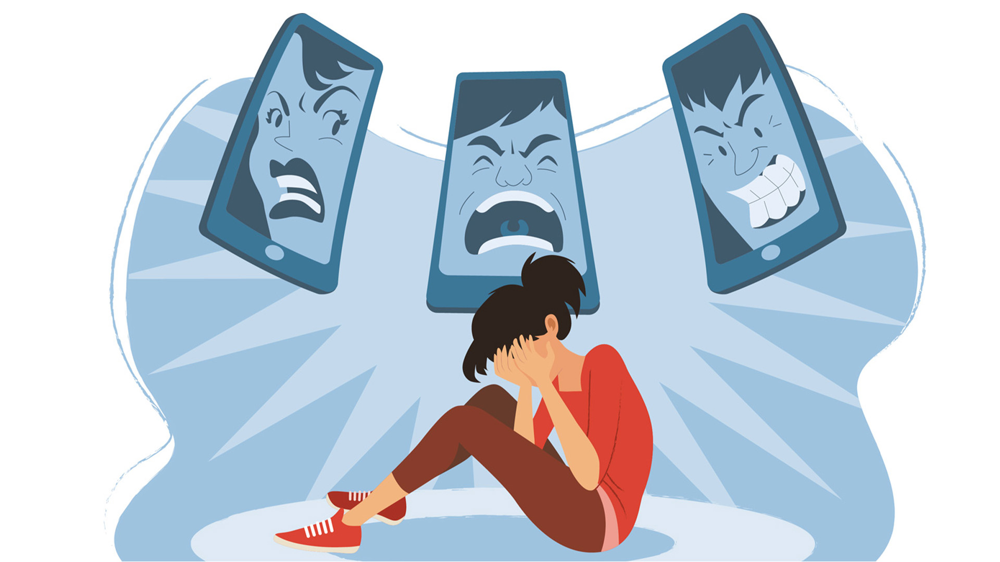
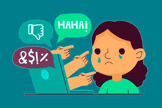
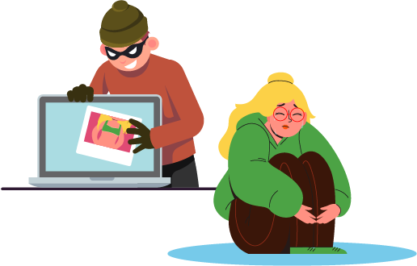
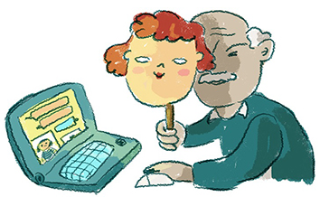

En la materia de computacion se iso la creacion de una pagina web de la cual su contenido es sobre el proyecto aula el cual trata sobre la violencia digitalen cada una de las materias
La violencia digital, también conocida como violencia en línea o ciberviolencia, se refiere a cualquier forma de agresión, hostigamiento, acoso o daño que se realiza a través de medios digitales y plataformas en línea. Esta forma de violencia puede manifestarse mediante el uso de redes sociales, mensajería instantánea, correos electrónicos, foros, blogs y otras plataformas digitales para intimidar, humillar, amenazar o perjudicar a una persona o grupo.
Hoy en dia hay un alto porcentaje de personas que sufren violencia digital puesto que cada dia vamos inobando mas y mas en la tecnologia sin inbargo en el intate que tu comienzes a ver o incluso a sentir un coportamiento rraro no dudes en buscar ayuda hacercandote con algun profesor o amigo que te pueda ayudar para evitar daños mayores ya que se han dado casos de personas que a causa de la vilencia digital llegan a sufrir daños psicologicos,sin enbargo puedes buscar ayuda a tiempo para no llegar a esto
| Aspecto | Imagen |
| Ciberbullying |  |
| Sexting |  |
| Stalked | |
| Shaming |  |